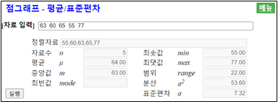
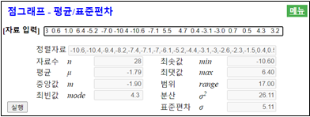
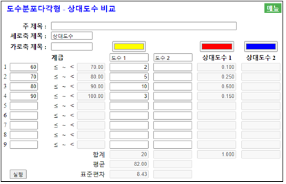
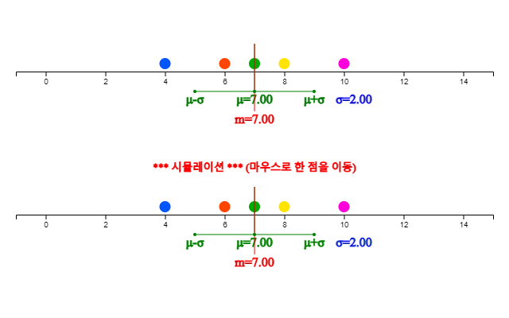

⭐ 생각열기 |
한 중학교 학생 5명을 표본 추출하여 몸무게를 조사한 자료가 다음과 같다.
(자료 4.1) 한 중학교 학생 5명 표본의 몸무게 (kg)
|
|
💎 탐구 |
1) 이 자료들을 대표할 수 있는 대푯값을 찾기위한 그래프는 어떠한 것이 있을까? 2) 10명의 학생 몸무게를 대표할 만한 값으로는 어떠한 것이 있을까? |
4. 자료의 대푯값과 산포도
🎲 🎯 ⚖ μ ∑4.1 자료의 대푯값 – 평균 / 중앙값 |
양적 자료인 경우에 자료의 대푯값과 산포도를 측정하여 분석한다. - 자료의 대푯값 – 평균 / 중앙값 - 자료의 산포도 – 분산 / 표준편차 |
4.1 자료의 대푯값 – 평균 / 중앙값
위와 같은 몸무게 자료의 전반적인 분포를 보기위해서는 앞에서 살펴본 줄기와 잎 그림이나 히스토그램을 생각할 수 있다. 하지만 자료를 대표하는 값을 살펴보기에는 점그래프가 적절하다. 점그래프는 자료의 최솟값과 최댓값을 구한 후 가로축 상에 이 값들을 먼저 표시하고, 각각의 자료를 최솟값과 최댓값에 비례한 위치를 계산하여 점으로 표시한 것이다.
<그림 4.1>은 [자료 4.1]에 대한 점그래프이다. 최솟값 55와 최댓값 76에 비례해서 각각의 자료를 동그란 점으로 표시한 것이다.

<그림 4.1> 5명의 몸무게에 대한 점그래프
이와 같은 5개의 몸무게 자료를 대표할 만한 값으로 많이 쓰이는 것이 평균이다. 평균은 모든 자료를 더한 후 이를 자료의 수로 나눈 것이다. 즉, 평균은 자료의 무게중심을 의미한다. 자료가 전체 집단을 나타내는 경우 이를 모집단이라 부른다. 만일 모집단에서 일부 자료만 추출했을 경우 이를 표본이라 부른다. 모집단인 경우 평균은 \(\mu\)(뮤라 읽음)로 표시하고 표본인 경우에는 \(\overline x\) (엑스 바로 읽음)로 표시한다. (자료 4.1)은 표본이므로 표본평균은 다음과 같이 구한다. $$ \text{표본평균} = \overline x = \frac{63 + 60 + 65 + 55 + 77}{5} = \frac{320}{5} = 64 $$
\(n\)개의 표본 자료를 \(x_1 , x_2 , ... , x_n \)으로 표시하였을 때 표본평균은 다음과 같은 공식으로 나타낼 수 있다. $$ \small \overline x = \frac{1}{n} \sum_{i=1}^n x_i $$
일반적으로 평균은 자료를 대표하는 값으로 매우 적절하지만 자료 중에 매우 큰 값이나 작은 값이 있을 때는 이 값에 영향을 많이 받는다. 이러한 경우 중앙값이 이용된다. 중앙값은 자료를 순서대로 나열하였을 때 그 중앙에 있는 값을 의미한다. (자료 4.1)에서는 홀수인 5개의 자료가 있어 그 중앙인 3번째(\(\frac{n+1}{2}\)번째) 자료가 중앙값이다.
(자료 4.1)을 오름차순으로 정렬하면 다음과 같다.
55 60 63 65 77
여기에서 중앙값은 오름차순으로 정리한 자료의 3번째 자료인 63이다.
만일 자료가 6개인 경우 중앙값은 어떻게 구할까? 이 경우 자료의 중앙값은 정렬된 자료의 3번째(\(\frac{n}{2}\)번째)와 4번째(\(\frac{n+2}{2}\)번째)의 평균으로 계산한다.
일반적으로 중앙값은 \(m\)으로 표시하고 구하는 방법은 다음과 같다.
1) 자료를 오름차순으로 정렬한다.
2) 자료수가 홀수 개인지 짝수 개인지 확인한다.
3) 자료가 홀수 개이면 중앙값 \(m\) = (\(\frac{n+1}{2}\))번째 자료
자료가 짝수 개이면 중앙값 \(m\) = (\(\frac{n}{2}\))번째와 (\(\frac{n+2}{2}\))번째 자료의 평균
자료가 많을 경우 위와 같이 수작업으로 평균과 중앙값을 구하는 것은 시간도 많이 걸리고 쉽지 않다. 『eStat』소프트웨어를 이용하여 자료의 대푯값을 구해보자.
🎲 실습 4.1
『eStat』을 이용하여 (자료 4.1) 5명 학생들의 몸무게에 대한 점그래프를 그리고 평균 및 중앙값을 구해보자.풀이
|
왼쪽의 QR을 이용해 『eStatH』 메뉴에서 ‘점그래프 – 평균/표준편차’를 선택하면 <그림 4.2>와 같은 창이 나타난다. ‘자료 입력’에 학생들의 몸무게 자료를 입력한다. (전자책에서 자료를 복사하여 붙여넣기를 해도 됨) |

<그림 4.2> 점그래프를 위한 몸무게 자료 입력
자료를 입력하면 자료수, 최솟값, 최댓값, 평균, 중앙값 등이 계산된다. [실행] 버튼을 클릭하면 <그림 4.1>과 같은 점그래프가 나타나고 평균 및 중앙값이 표시된다.
<그림 4.1> 아래에는 <그림 4.3>과 같은 시뮬레이션 창이 나타난다. 이 시뮬레이션은 마우스로 한 점을 이동시켜 평균과 중앙값의 변화를 살펴보는 것이다. 예를 들어 제일 오른쪽의 점을 마우스로 끌어 오른쪽으로 이동하면 평균은 변하지만 중앙값은 변하지 않는다. 즉 중앙값은 극단점에 영향을 받지 않는다

<그림 4.3> 한 점의 변화에 따른 평균 / 중앙값 변화의 관찰 시뮬레이션
🎲 실습 4.2
『eStat』을 이용하여 우리나라의 2월 서울의 일별 최저기온([실습 3.2])을 조사한 (자료 3.2)에 대하여 평균 및 중앙값을 구해보자.
(자료 3.2) 2021년 2월 서울의 일별 최저기온 (섭씨 도) (기상청)
|
-2.3 -8.2 -9.4 -7.4 -4.4 4.3 -2.6 5.4 -6.1 -1.5
1.3 0.6 1.0 6.4 -5.2 -7.0 -10.4 -10.6 -7.1 5.5 4.7 0.4 -3.1 -3.0 0.7 0.5 4.3 3.2 |
풀이
|
왼쪽의 QR을 이용하여 나타나는『eStatH』 메뉴에서 ‘점그래프 – 평균 / 표준편차’를 선택하면 <그림 4.4>와 같은 자료 입력창이 나타난다. |

<그림 4.4> 점그래프의 자료입력 상자
자료 입력’에 일별 최저기온 자료를 입력하면 (전자책에서 자료를 복사하여 붙여넣기를 해도 됨) 즉시 <그림 4.4>와 같이 입력된 자료수 28, 평균 –1.79, 중앙값 –1.90, 최솟값 –10.6도, 최댓값이 6.4도임을 보여준다.
[실행] 버튼을 클릭하면 <그림 4.5>와 같은 점그래프가 나타나고 평균() 및 중앙값()이 표시된다. 이 점그래프 아래에는 점을 마우스로 변화시키며 평균과 중앙값의 변화를 살펴볼수 있는 시뮬레이션창이 나타난다.

<그림 4.5> 일별 최저기온의 점그래프와 시뮬레이션창
⏱ 과제 4.1
|
다음은 2016년 현재 서울의 25개 행정구별 자전거 전용 도로 길이에 대한 자료이다.
([과제 3.1]). 『eStat』을 이용하여 점그래프와 자료의 대푯값을 구하고 분석하라.
(자료 3.3) 2019년 서울의 자전거 도로 (단위 km)
(서울통계정보시스템)
|
⏱ 과제 4.2
|
다음은 2020년 우리나라를 통과한 태풍의 최대 풍속에 대한 자료이다 ([과제 3.2]). 『eStat』을 이용하여 점그래프와 자료의 대푯값을 구하고 분석하라.
(자료 3.4) 2020년 우리나라를 통과한 태품의 최대풍속
(단위 m/초) (기상청)
|
도수분포표에서 평균구하기
⭐ 생각열기 |
다음과 같이 한 중학교 학급의 학력고사 성적의 도수분포표가 주어졌다고 하자.
[표 4.1] 중학교 학력고사 성적의 도수분포표
|
||||||||||||
💎 탐구 |
이 자료들을 대표할 수 있는 평균을 어떻게 구할까? |
원 자료가 아니라 도수분포표가 주어졌을 때 평균은 중간값을 이용해 근사적으로 다음과 같이 구할 수 있다.
먼저 각 계급의 중간값을 구한다. 그리고 각 계급에 도수만큼 중간값이 있다고 생각하고 이 근사 자료를 이용하여 평균을 구한다.
[표 4.2] 중간값을 이용한 중학교 학력고사 성적의 근사 자료
| 몸무게(kg) | 중간값 | 도수 | 근사자료 |
|---|---|---|---|
| 60이상 70미만 | 65 | 3 | 65 65 |
| 70 ~ 80 | 75 | 7 | 75 75 75 75 75 |
| 80 ~ 90 | 85 | 11 | 85 85 85 85 85 85 85 85 85 85 |
| 90 ~ 100 | 95 | 5 | 95 95 95 |
| 합계 | 30 |
즉 평균은 다음과 같다. $$ \small \begin{align} \text{평균} &= \frac{65+65+75+75+75+75+75+85+85+85+85+85+85+85+85+85+85+95+95+95}{20} \\ &= \frac{65 \times 2 + 75 \times 5 + 85 \times 10 + 95 \times 3} {20} \\ &= \frac{1640}{20} = 82 \end{align} $$
『eStatH』의 ‘도수분포다각형 – 상대도수 비교’를 이용하면 도수분포표의 근사적인 평균을 <그림 4.6>과 같이 구할 수 있다. 계급구간의 왼쪽값과 도수1을 인력한 후 [실행] 버튼을 누르면 된다.

<그림 4.6> 도수분포표를 이용한 평균의 계산
4.2 자료의 산포도 - 표준편차
⭐ 생각열기 |
한 중학교 학생 표본 5명의 퀴즈 성적(10점 만점)이 다음과 같다.
(자료 4.1) 한 중학교 학생 5명의 퀴즈 성적 (10점 만점)
|
|
💎 탐구 |
이 자료들이 흩어져 있는 정도를 측정하는 방법이 있을까? |
자료들이 흩어져 있는 정도를 산포도라 부른다. 산포도의 한가지 간단한 측정 방법은 최댓값에서 최솟값을 뺀 범위이다. $$ \text{범위} = \text{최댓값 - 최솟값} $$ (자료 4.1)에서 최댓값은 77이고 최소값은 55이므로 범위는 22이다. $$ \text{범위} = \text{77 - 55 = 22} $$
이러한 범위는 극단값에 너무 민감하기 때문에 산포도의 측정에는 일반적으로 분산 또는 표준편차를 많이 이용한다. 분산은 각 자료값과 평균과의 거리를 제곱하여 합을 구한 후 이를 자료의 수로 나눈 것이다. 따라서 자료가 평균을 중심으로 많이 흩어져 있으면 분산이 커지고, 자료가 평균주위에 몰려 있으면 분산이 작게 된다. 모집단의 분산을 모분산이라 부르며 \(\sigma^2\)(시그마 제곱으로 읽음)으로 표시하고, 표본의 분산을 표본분산이라 부르며 \(s^2\) (에스 제곱으로 읽음)로표시한다. 모분산과 표본분산의 계산공식은 아래와 같이 약간의 차이가 있다. \(N\)개의 모집단 자료를 \(x_1 , x_2 , ... , x_N\)으로 표시하고 모평균을 \(\mu\), \(n\) 개의 표본 자료를 \(x_1 , x_2 , ... , x_n\)으로 표시하고 표본평균을 \(\overline x\)로 표시하였을 때 모분산과 표본분산은 다음과 같은 공식으로 나타낼 수 있다. $$ \begin{align} &\text{모분산} &\quad \sigma^{2} ~&=~ { {1 \over N} {\sum _{i=1} ^{N} (x_{i} - \mu )^{2}} } ~~~~ (N:~모집단~자료수) \\ &\text{표본분산} &\quad s^{2} ~&=~ { { 1 \over {n-1} }{\sum _{i=1} ^{n} (x_{i} - {\overline x } ) ^{2}} } ~~~~ (n:~ 표본~자료수) \end{align} $$ 표본분산을 계산할 때 \(n\) 대신 \(n-1\)을 사용하는 데에는 중요한 이유가 있는데, 이는 6장에서 설명하기로 한다.
(자료 4.2)에서 평균은 다음과 같다. $$ \begin{align} &\text{표본평균} \quad \overline x ~=~ \frac{6+8+7++4+10}{5} ~=~ \frac{35}{5} ~=~ 7 \end{align} $$
분산은 평균에서 각 측정값까지의 거리를 제곱하여 합을 구한 후 그 평균을 구한 것이다. 즉, 거리제곱의 평균이다. $$ \text{표본분산} \quad s^{2} ~=~ \frac{ (6-7)^2 + (8-7)^2 + (7-7)^2 + (4-7)^2 + (10-7)^2} {5-1} ~=~ \frac{20}{4} ~=~ 5 $$
표준편차는 분산의 제곱근으로 정의한다. 모집단의 표준편차를 모표준편차라고 부르며 \(\sigma\)로 표시하고, 표본의 표준편차를 표본표준편차라고 부르며 \(s\)로 표시한다. 분산은 제곱거리의 평균이어서 현실적인 해석이 쉽지 않으나 표준편차는 분산의 제곱근이어서 각 값과 평균과의 평균거리의 측도로 해석이 가능하다. $$ \begin{align} &\text{모표준편차} &\quad \sigma ~&=~ \sqrt{\sigma^2} \\ &\text{표본표준편차} &\quad s ~&=~ \sqrt{s^2} \end{align} $$ (자료 4.2)의 표본표준편차는 \(s\) = \(\sqrt{s^2}\) = \(\sqrt{5}\) = 2.24 이다.
🎲 실습 4.3
『eStat』을 이용하여 (자료 4.2) 5명 표본 학생들의 퀴즈 성적에 대한 점그래프를 그리고 평균 및 표준편차를 구해보자.풀이
|
왼쪽의 QR을 이용해 『eStatH』 메뉴에서 ‘점그래프 – 평균/표준편차’를 선택하면 <그림 4.7>과 같은 창이 나타난다. ‘자료 입력’에 학생들의 퀴즈성적 자료를 입력한다. (전자책에서 자료를 복사하여 붙여넣기를 해도 됨) |

<그림 4.7> 점그래프를 위한 퀴즈성적 자료 입력
자료를 입력하면 자료수, 최솟값, 최댓값, 평균, 중앙값 등이 계산된다. [실행] 버튼을 클릭하면 <그림 4.8>과 같은 점그래프가 나타나고 평균, 중앙값, 표준편차, 그리고 평균 표준편차 길이가 표시된다.
그림 아래에 있는 시뮬레이션 창을 이용하여 마우스로 한 점을 이동시키면서 표준편차 길이의 변화를 살펴볼 수 있다. 표준편차도 극단점에 영향을 받는다.

<그림 4.8> 평균 표준편차가 표시된 점그래프
도수분포표의 계급 구간의 결정은 분석자가 자료의 최솟값과 최댓값을 살펴보고 결정한다.
🎲 실습 4.4
『eStat』을 이용하여 우리나라의 2월 서울의 일별 최저기온([실습 3.2])을 조사한 (자료 3.2)에 대하여 점그래프를 그리고 평균 및 표준편차를 구해보자.풀이
|
왼쪽의 QR을 이용하여 나타나는『eStatH』 메뉴에서 ‘점그래프 – 평균 / 표준편차’를 선택하면 <그림 4.9>와 같은 자료 입력창이 나타난다. |

<그림 4.9> 점그래프의 자료입력 상자
자료를 입력하면 자료수, 최솟값, 최댓값, 평균, 중앙값 등이 계산된다. [실행] 버튼을 클릭하면 <그림 4.10>과 같은 점그래프가 나타나고 평균, 중앙값, 표준편차, 그리고 평균 표준편차 길이가 표시된다.
그림 아래에 있는 시뮬레이션 창을 이용하여 마우스로 한 점을 이동시키면서 표준편차 길이의 변화를 살펴볼 수 있다. 표준편차도 극단점에 영향을 받는다.

<그림 4.10> 일별 최저기온의 점그래프와 시뮬레이션창
⏱ 과제 4.3
|
다음은 2016년 현재 서울의 25개 행정구별 자전거 전용 도로 길이에 대한 자료이다 ([과제 3.1]). 『eStat』을 이용하여 점그래프와 자료의 평균 및 표준편차를 구하고 분석하라.
(자료 3.3) 2019년 서울의 자전거 도로 (단위 km) (서울통계정보시스템)
|
⏱ 과제 4.4
|
다음은 2020년 우리나라를 통과한 태풍의 최대 풍속에 대한 자료이다 ([과제 3.2]). 『eStat』을 이용하여 점그래프와 자료의 평균 및 표준편차를 구하고 분석하라.
(자료 3.4) 2020년 우리나라를 통과한 태품의 최대풍속 (단위 m/초) (기상청)
|
도수분포표에서 표준편차 구하기
⭐ 생각열기 |
다음과 같이 한 중학교 학급의 학력고사 성적의 도수분포표가 주어졌다고 하자.
[표 4.3] 중학교 학력고사 성적의 도수분포표
|
||||||||||||
💎 탐구 |
이 자료들을 산포도로서 표준편차를 어떻게 구할까? |
앞 절에서 원 자료가 아니라 도수분포표가 주어졌을 때 평균을 중간값을 이용해 근사적으로 구하였다. 표준편차도 유사한 방법으로 구한다.
먼저 각 계급의 중간값을 구한다. 그리고 각 계급에 도수만큼 중간값이 있다고 생각하고 이 근사 자료를 이용하여 평균을 구한다.
[표 4.4] 중간값을 이용한 중학교 학력고사 성적의 근사 자료
| 몸무게(kg) | 중간값 | 도수 | 근사자료 |
|---|---|---|---|
| 60이상 70미만 | 65 | 3 | 65 65 |
| 70 ~ 80 | 75 | 7 | 75 75 75 75 75 |
| 80 ~ 90 | 85 | 11 | 85 85 85 85 85 85 85 85 85 85 |
| 90 ~ 100 | 95 | 5 | 95 95 95 |
| 합계 | 30 |
즉 평균은 다음과 같다. $$ \text{평균} ~=~ \frac{65 \times 2 + 75 \times 5 + 85 \times 10 + 95 \times 3} {20} ~=~ \frac{1640}{20} ~=~ 82 $$
모분산과 모표준편차도 유사한 방법으로 구한다. $$ \small \begin{align} &\text{모분산} \qquad \qquad \sigma^2 ~=~ \frac{(65-82)^2 \times 2 + (75-82)^2 \times 5 + (85-82)^2 \times 10 + (95-82)^2 imes 3} {20} ~=~ \frac{1420}{20} ~=~ 71 \\ &\text{모표준편차} \qquad \sigma ~=~ \sqrt{\sigma^2} ~=~ \sqrt{71} ~=~ 8.43 \end{align} $$
『eStatH』의 ‘도수분포다각형 – 상대도수 비교’를 이용하면 도수분포표의 근사적인 평균과 표준편차를 <그림 4.11>과 같이 구할 수 있다. 계급구간의 왼쪽값과 도수1을 인력한 후 [실행] 버튼을 누르면 된다.
<그림 4.6> 도수분포표를 이용한 평균의 계산
연습문제
*** 답을 선택한 후 제출 버튼을 누르세요
4.1 다음 자료 중 평균 28, 중앙값 30인 변량은?
4.2 6명의 통계학 점수가 70, 60, 80, 90, 90, 70이다. 이 점수의 중앙값은 얼마인가?
4.3 산술평균의 성질 중 틀린 것은?